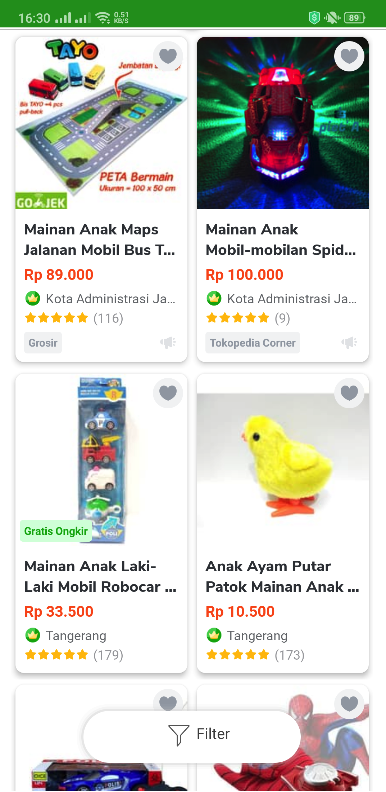

A sample of how to filter a list with existing json.
You are asked to improve the page by the following tasks.
-
Show list of products in a 2-column grid like illustration below:

(Products list is from products.json and you may create UI that is different from the illustration)
-
Create filter page.
Create a filter button in the list page. When this button is clicked, Filter Page (or Bottom Sheet) will be shown so user can configure the filter based on: location and price.
Location filter should use Choice chips, single selection, and only show 3 options: (1) The location that appears most frequent in the list (2) The second most frequent item in the list, and (3) Other.
For example:
Location:
[Jakarta] [Bali] [Other]
This options should not be hardcoded.
Price Filter should be enable user to input min and maximum price (can use Slider). Min and max price is based on the product list and should not be hardcoded.
For example:
Min = 15000 (15000 is the minimum price in the list)
In the filter page, there will be a button to submit the filter configuration. If this submit button is clicked, the product list will reflect the change according to the given input.
-
Don't add new library.